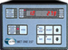

Met237 Particle Counter



The MET ONE 237 particle counter is a battery operated, laser based particle counter.is used in environments where the particulate contamination does not exceed two million particles per cubic foot of air, such as clean-rooms, medical instrument assembly, computer rooms. The Concentration mode in the MET ONE 227 particle counter is used to take a brief sample and estimate the probable cleanliness for areas with unknown particulate levels. This is based on built-in calculations performed in the microprocessor of the counter. Long term use in uncontrolled environments such as open air office spaces or outdoor air will require frequent user maintenance.
The MET ONE 237 particle counter operates at a flow rate of 0.1 cubic feet per minute (cfm). The flow rate is required to set the sampling parameters. It takes 10 minutes to sample one cubic foot of air while the results of a one minute sample is multiplied by ten to obtain counts per cubic foot. All counts are reported as cumulative counts; that is, all the reported 0.3 μm particles are 0.3 μm and larger in size.
More details can be found in the maual.
Data Formats
The Met637 object does not produce an ORCA data record at this time.
The counts can be used in ORCA’s process controller. The max count value is used to scale process meters. The alarm value is used for the alarm point.
Start or Stop a measurement
The last measurement reported to ORCA
Cycle duration

Count status